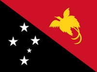

Otto Jefferson Supris | WDD 130

Hi, my name is Otto Jefferson Supris and i'm from Papua New Guinea and I am a full-time BYU Pathway Student.
Currently a Online Degree Student of Brigahm Young University-Idaho, USA.
Been part of this amazing program has help me to grow individually as a person and to face challenges with strength and courage and develop the ability to
remain calm and face them.
Papua New Guinea

This is the flag of Papua New Guinea.
The country got it's independence in 16th September 1975 from Australia. Papua New Guinea is the land of the unexpected
which some call it, from it's vast cultural heritage to over thousand tribes with over eight hundred plus languages, one could only imaging
the cultural differences and the way life in this country. With all this differences, Papua New Guineans don
don't consider themselves different from each other. They love there cultural heritage and their way of live, even to this day.